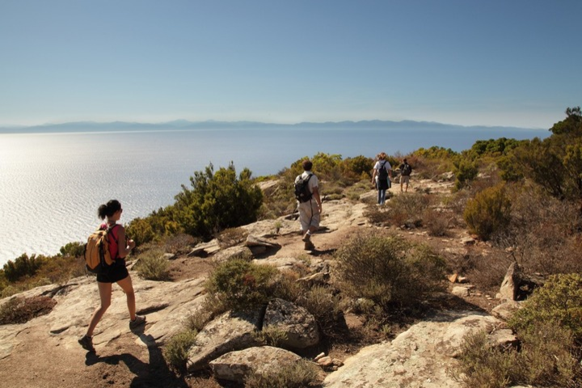
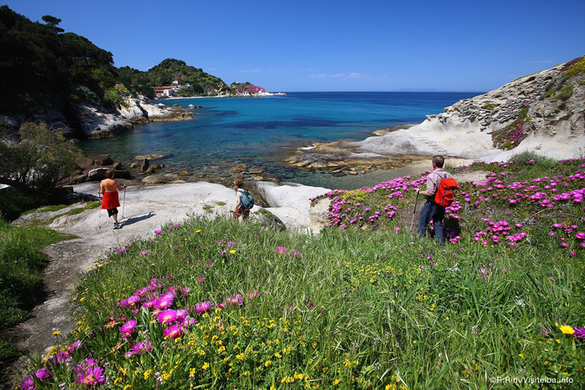
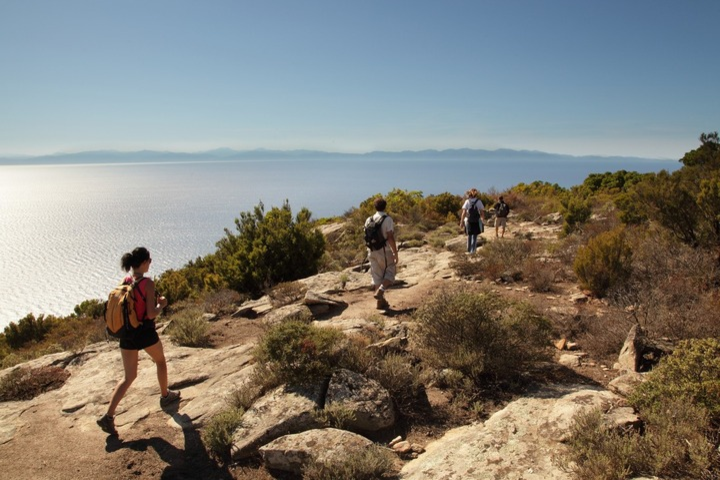
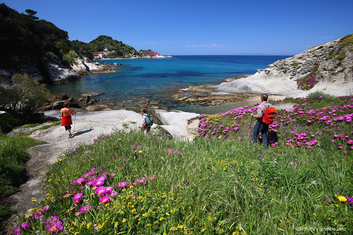
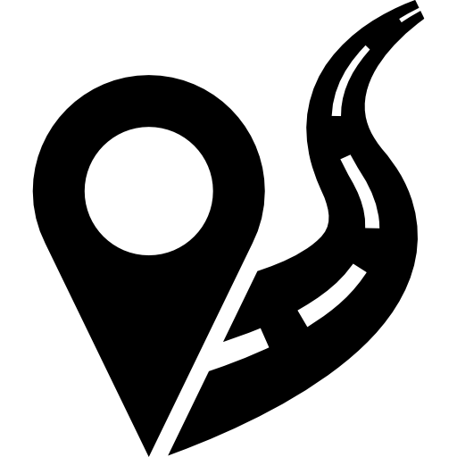

Les balades et randonnées à Marseille et en Provence
Dans la région de Marseille, on a la chance de trouver des circuits de randonnées aussi divers que variés. Des Calanques au massif du Garlaban en passant par la Sainte Baume, découvrez les meilleures randonnées.
 



Top 6 des meilleures randonnées
La calanque de Sormiou
La calanque de Sormiou
Vous ne pouvez pas visiter Marseille sans voir les calanques. Marseille Tourisme a pensé à vous et aux amateurs de randonnée et vous propose une promenade au cœur du Parc National des Calanques. Cette randonnée familiale et facile vous propose de rejoindre la calanque de Sormiou par le Col des Baumettes.
- 6.46 kilomètres
- Difficulté:
- Durée : 54 minutes à 2 heures
Sormiou est l'une des plus belles calanques du parc national de Marseille et sans nul doute la calanque préférée des marseillais. Loin de la ville, vous pourrez vous reposer et admirer la vue magnifique d'offre la calanque.
Comment se rendre au départ de la randonnée ?
En voiture De Marseille Hôtel de Ville (12,7km – 25min) : Prendre le tunnel de la Joliette puis le tunnel Prado-Carénage, le tunnel Prado S. Suivez le Boulevard Michelet/D559 vers le Boulevard Camille Blanc. Empruntez l’Avenue Ludovic Legre puis le Chemin du Roi d‘Espagne vers le Chemin de Sormiou. Garez-vous sur le parking à l’entrée du parc des calanques à la Cayolle. Suivez l’itinéraire détaillé en cliquant sur ce lien. Vous pouvez aussi prendre le bus n°23 au rond-point du Prado et vous arrêter à la Cayolle.


Le parcours Ciotat
Le parcour Ciotat
Entre ville, mer et terre, profitez de cette randonnée rafraîchissante aux alentours de La Ciotat. Allez admirer la baie des hauteurs du belvédère et allez rendre visite au Bec de l’Aigle, terrain de chasse de certains escaladeurs ! Une très belle randonnée facile mais assez longue. Pensez-donc à bien vous équiper (chaussures et bâton de marche, lunettes de Soleil, eau et coupe-vent).
- 15.53 kilomètres
- Difficulté:
- Durée : 2 heures à 4 heures
Le départ se fait de la Ciotat. En suivant la piste banalisée, vous passerez dans la Calanque du Grand Mugel. Cette calanque sauvage vous permettra de faire une première pause baignade. En poursuivant, vous arriverez au Cap de l’Aigle d’où vous aurez une vue sur l’Île verte et toute la côte. N’oubliez pas de prendre des photos !
Comment se rendre au départ de la randonnée ?
En voiture De Marseille (49.7km – 54min) : Prendre Rue Caisserie sur 130m. Continuer tout droit Place de Lenche sur 70 m. Continuer tout droit Rue de la Cathédrale sur 100m. Continuer tout droit Place de la Major sur 50 m. Continuer tout droit Avenue Robert Schuman sur 450m. Prendre à gauche Boulevard des Dames sur 150m. Prendre à gauche sur 950m. Rejoindre l’A55 sur 450m. Continuer tout droit sur 28,7 km. Prendre la sortie 9 et continuer sur 700m. Entrer dans La Ciotat et continuer sur 300m. Au rond-point, prendre à gauche et continuer sur 1,2 km. Au rond-point, continuer tout droit Avenue Caporal Chef Alain Deruy sur 300m. Au rond-point de Lattre de Tassigny, prendre à droite Chemin du Puits de Brunet et continuer sur 200m. Au rond-point, prendre à gauche Chemin du Puits de Brunet et continuer sur 600m. Au rond-point, prendre à droite Chemin du Puits de Brunet et continuer sur 200m. Au rond-point, prendre à gauche Avenue Louis Crozet et continuer sur 500m. Continuer tout droit Avenue François Billoux et continuer sur 800m. Prendre à gauche Avenue Marc Sangnier et continuer sur 200m. Prendre à droite Avenue du Cardinal Maurin et continuer sur 200m. Continuer tout droit Avenue de Figuerolles et continuer sur 100m. Prendre à gauche Avenue du Mugel sur 300m.

Parcours Barrage de Bimont
Parcours Barrage de Bimont
Vous êtes à la recherche d’activités à Marseille ? Marseille Tourisme a la solution et vous propose une randonnée facile, accessible pour toute la famille. Direction le Barrage de Bimont pour le début de ce circuit de randonnée.
- 8.63 kilomètres
- Difficulté:
- Durée : 1 heures à 2 heures
On vous propose une boucle qui démarre au parking du barrage de Bimont. Haut de 87 mètres, le barrage est impressionnant. Mis en service en 1952, sa surface s’élève à 73 hectares pour une productivité de 9 GWh/an. Attention cependant, si vous vous y rendez, jusqu’en septembre 2019 le barrage ne sera accessible au public que les week-ends et jours fériés pour cause de travaux de rénovation.
Comment se rendre au départ de la randonnée ?
En voiture De Marseille (53 min – 40,8 km) : Prendre l’A7 direction Lyon Aix Saint-Antoine. Rejoindre A8/E80 (La Provençale) direction Toulon Nice et poursuivre sur 3,6 km. Entrez dans Aix-en-Provence. Prendre la sortie 31 et continuer sur Avenue Henri Mauriat. Au rond-point, prendre à droite Avenue Henri Mauriat. Au rond-point, prendre à gauche Avenue Henri Malacrida. Continuer tout droit Cours Gambetta. Prendre à droite Avenue des Déportés de la Résistance Aixoise. Au rond-point, continuer tout droit Avenue des Déportés de la Résistance Aixoise et continuer sur 500m. Au rond-point Fontaine du Commandant Jean Dubouy, prendre à gauche Rue du Régiment d’Infanterie Coloniale du Maroc. Au rond-point Place du Lieutenant-Colonel Arne, prendre à droite Traverse du Lavoir de Grand-Mère. Continuer tout droit Rue Saint-Thomas de Villeneuve. Prendre à droite Avenue Jean et Marcel Fontenaille. Passer par Les Trois Bons Dieux. Prendre à droite (D10.f) et continuer sur 1 km. Prendre à droite. Prendre à droite Barrage de Bimon..

Massif de l'Étoile
Massif de l'Étoile
Si vous êtes en vacances à Marseille, pourquoi ne pas partir en randonnée du côté de Château Gombert ? La randonnée dans le massif de l’Étoile vous offrira un panorama sur Marseille et les îles Frioul. La garrigue vous emportera tout au long de la balade dans l’atmosphère visuel et odorante de la Provence.
- 13.33 kilomètres
- Difficulté:
- Durée : 2 heures à 3 heures
Pour commencer, munissez-vous de bonnes chaussures et n’oubliez pas votre bouteille d’eau. À la source des Ouides, après le col du col homonyme, on peut trouver de l’eau, mais il faut prévoir la chose car des parts du circuit sont très pentues et la végétation basse ne protège pas du Soleil. On vous conseille vivement d’enchausser des chaussures de marche et d’utiliser des bâtons car il y a de nombreux passages caillouteux. Commençons cette randonnée avec le Chemin de Palama. En poursuivant sur le sentier, vous grimperez jusqu’à une vue magnifique sur les îles du Frioul et sur Marseille.
Comment se rendre au départ de la randonnée ?
En voiture De l’hôtel de ville de Marseille (14,4km – 37min) : Prendre Rue Caisserie. Continuer tout droit Place de Lenche. Continuer tout droit Rue de la Cathédrale. Continuer tout droit Place de la Major. Continuer tout droit Avenue Robert Schuman. Continuer tout droit Boulevard de Dunkerque. Rejoindre A55. Entrer dans Marseille. Prendre la sortie 3 et continuer sur Avenue du Cap Pinède. Au rond-point Pierre Paraf, prendre à gauche Avenue Salvador Allende. Au rond-point du Père Wresinski, prendre à gauche Chemin du Merlan à La Rose. Au rond-point M. Mauront, prendre à gauche Avenue de Saint-Jérôme. Prendre à droite Chemin de Château Gombert. Au rond-point, prendre à gauche Chemin de Château Gombert. Au rond-point, prendre à gauche Chemin de Château Gombert. Prendre à gauche Chemin de Palama. Au rond-point, continuer tout droit Chemin de Palama.

Col da la gardiole
Col da la gardiole
Les calanques ne sont pas que des criques et des plages ! Le parc naturel recèle d’autres trésors, plus secrets. Marseille Tourisme vous conseille une randonnée au Col de la Gardiole. Imaginez un peu un sentier traversant des forêts de pins, de grandes étendus de verdure pour pique-niquer, des vignes et une vue superbe sur les calanques entre Marseille et Cassis. Vous passerez par le Col de la Gardiole, le Puits de Cancel, par des ruines et des vallons. Enfin, vous pourrez avec précaution vous approcher du gouffre aux quatre trous… Vous pourrez également vous rendre à la Calanque d’En Vau. Prévoyez de l’eau, une casquette, des lunettes de Soleil et bien sûr une bonne paire de chaussures ! Pour les plus sportifs, pourquoi ne pas tenter la randonnée en VTT ?
- 15.68 kilomètres
- Difficulté:
- Durée : 2 heures à 4 heures
Comment se rendre au départ de la randonnée ?
En voiture De l’hôtel de ville de Marseille (21,8km – 1h) : Prendre Rue Caisserie. Continuer tout droit Place de Lenche. Continuer tout droit Rue de la Cathédrale. Continuer tout droit Place de la Major. Continuer tout droit Avenue Robert Schuman. Prendre à gauche Boulevard des Dames sur 150m. Prendre à gauche. Rejoindre l’A55. Continuer tout droit direction Toulon sur 3,6 km. Entrer dans Marseille. Prendre la sortie 1 et continuer sur Tunnel Prado-Sud sur 1,2 km. Prendre à droite Boulevard Michelet sur 2,6 km. Au rond-point de Mazargues, continuer tout droit Avenue de Lattre de Tassigny sur 2,3 km. Au rond-point, prendre à gauche Avenue de Lattre de Tassigny et continuer sur 100m. Sortir de Marseille et continuer sur 600m. Au rond-point du Professeur Louis Pierrein, prendre à gauche Route Léon Lachamp et continuer sur 8,4 km. Prendre à droite Route Gaston Rebuffat (D559).

Parcours Les Pennes-Mirabeau
Parcours Les Pennes-Mirabeau
Marseille Tourisme vous invite à visiter les alentours de Marseille avec cette petite randonnée. Profitez d’une paisible balade en longeant la Cadière aux Pennes-Mirabeau. Le chemin de randonnée rejoint une petite partie du GR2013. La source du cours d’eau a un air magique et de l’eau sort d’une petite grotte. Les enfants seront conquis ! Et cette rivière vous apportera aussi un peu de fraîcheur durant les chaudes journées d’été.
- 2.79 kilomètres
- Difficulté:
- Durée : 23 minutes à 39 minutes
Aucun équipement particulier est nécessaire. Juste penser à respecter le lieu et à rendre de quoi boire 😉 Le retour reprend le même chemin. Pour les sportifs, pourquoi ne pas faire ce circuit de randonnée en vélo ? Au retour, vous pourrez passer au Centre Commercial de Plan de Campagne, l’un des plus fréquenté de France. Ses nombreuses boutiques raviront les fans de shopping 🙂
Comment se rendre au départ de la randonnée ?
En voiture De Marseille (21km – 26min) : Rejoindre l’A55 direction Lyon et poursuivre sur 12km. Rejoindre l’A7/E714 et continuer sur 3,1km. Prendre la sortie 30a et continuer sur la D113. Entrer dans Les Pennes-Mirabeau. Au rond-point, continuer tout droit D113 sur 1,1km.Prendre à gauche et continuer sur 200m. Poursuivre tout droit La Billonne sur 200m. Au rond-point, continuer tout droit sur 300m. Sortir de Les Pennes-Mirabeau. Prendre à droite Avenue Jean Monnet. Entrer dans Vitrolles. Au rond-point, continuer tout droit Avenue Jean Monnet. Au rond-point de Fontblanche, prendre à droite Boulevard Marcel Pagnol. Prendre à droite Chemin des Pinchinades et continuer sur 100 m.